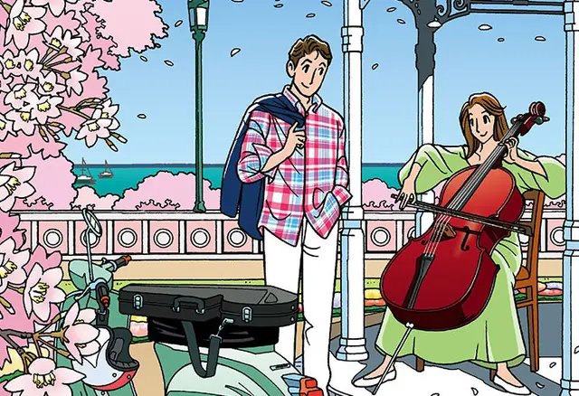
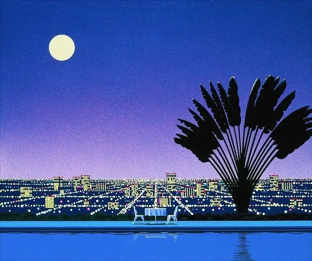
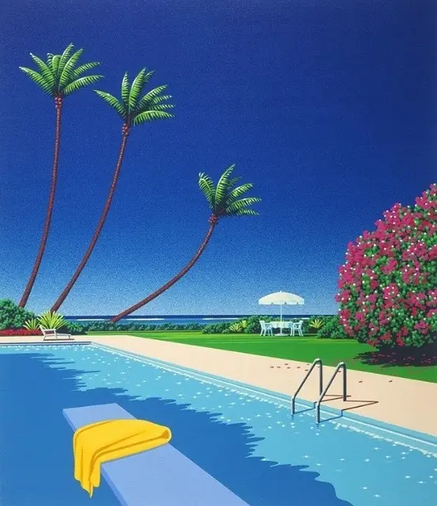
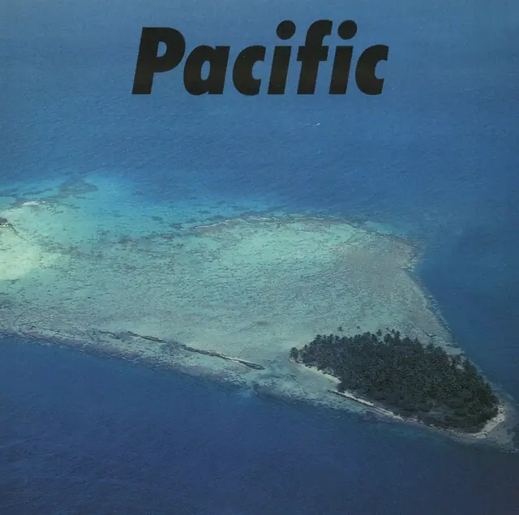
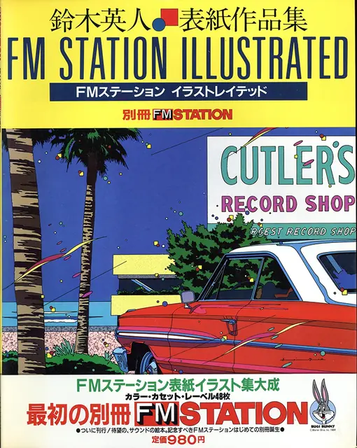
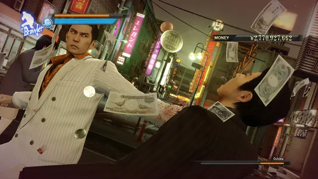
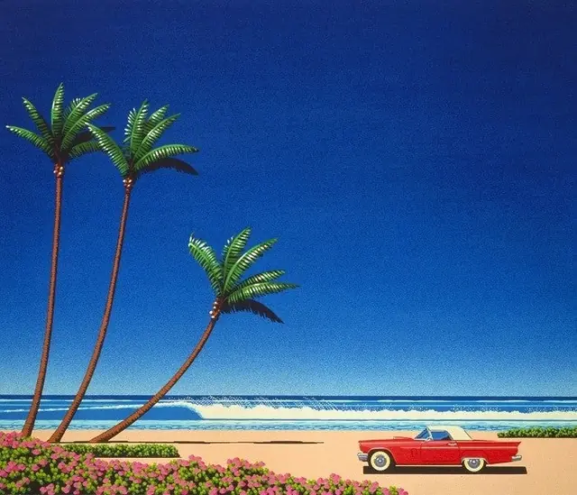
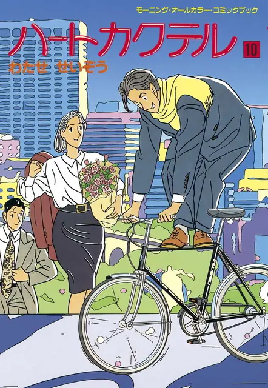

The feel
City pop pictures are American summers painted in Tokyo: Hiroshi Nagai's arching palms and deep blue skies came from across the Pacific, and he has said the summers in his paintings "are still and forever the ones in the United States of America".1 A typical Nagai scene holds a sunset, a lone palm, a vintage American car or a deserted motel,2 and viewers feel a strange nostalgia for landscapes they never saw at home.3
It works through hard, clear light, and Nagai's theme is light and shadow: he loves the black shadows a fine day throws on the ground, and paints them black.4 His colours are vivid and clear, with strong contrast between light and dark.3 The music behind the pictures was "a sparkling refraction of funk, soul, and boogie" made for Japan's thriving urbanites,1 and meticulous production is one of its common traits.5
- sunlit
- unhurried
- glossy
- wistful
- resort
- bubble-era
Where it comes from
City pop grew from Sugar Babe, a band formed in 1973 whose members included Tatsuro Yamashita and Taeko Ohnuki, and from Caramel Mama, the backing band that perfected its sound.6 It broke through in the 1980s with hits such as Yamashita's Ride on Time.6 Its look came from record sleeves: Hiroshi Nagai, a graphic designer who started painting after visiting the United States in 1973,7 painted the sleeve of Eiichi Ohtaki's A Long Vacation (1981), one of the defining images of what would later be called city pop,2,6 and Eizin Suzuki drew a West Coast shop for Yamashita's For You in 1982.8,9 Three decades later, YouTube's algorithm carried Mariya Takeuchi's 1984 song Plastic Love to millions of viewers and revived interest in the genre.5,6
Core elements
A deep blue sky
Nagai's palms stand under deep, block-blue skies.1 He prefers a blue sky to a sunset and calls the pinkish sky the current boom,4 and his other sky is a sunset in a romantic gradation.3
Hard light and black shadows
Nagai's theme is light and shadow, and he paints the shadows of a fine day black.4 He learned to give objects volume with light at a TV scenery workshop, which is why his pictures look like painted backdrops.4
Pools and palms
The palms are planted, not found: Nagai calls his work a kind of landscaping and says he put palm trees everywhere.7 In a pool, light blue water and dark shadow alone carry the cool.10
Remixed American scenery
Nagai remixes real places from architecture magazines, travel catalogues and travel agents' pamphlets.7 His first sparks were the parking lots of San Francisco airport, West Coast motels and the palms of Los Angeles, and he likes drawing American cars of the 1960s.2
Pantone overlay colour
Eizin Suzuki's side of the style is drawn: he lays transparent sheets in 30 to 50 colours over a black line drawing, a technique called Pantone overlay.8 His subjects are American resorts and classic cars,8 coloured from photographs he took travelling across America.11
Strong, crisp colour
Visitors to Nagai's gallery tell him the landscapes are American but the colours are Eastern.12 He notes that his colour is out of step with today's fashion for pale tints and line drawings, and that his crisp pictures are the ones people respond to.12
How to do it
Build scenes from references
Collect architecture magazines, travel catalogues and agency pamphlets, as Nagai does, and remix the real landscape instead of painting it as it is.7 For him, adding one palm tree to an old picture is enough to make a new work.12
Paint the silhouettes black first
Use the scenery painter's method Nagai learned in TV set work, chosen because it is fast: paint each silhouette black, then add the highlights.3 A palm starts solid black and takes a dark green, a mid green and a bright highlight green on top.3
Add light to give volume
Let light fall on each object to give it volume, the trick Nagai learned painting TV backgrounds, and leave the shadows of a fine day black.4 For a pool, light blue water against dark shadow is enough.10
Lay flat colour over line art
For Suzuki's look, draw everything in black line, then lay 30 to 50 flat colours over it, as his Pantone overlay does with transparent sheets.8 He has also worked digitally since the 2000s.8 Shoot your own references: he colours his scenes from photographs taken on his travels across America.11
Use toon shading in 3D
Run the diffuse lighting through a colour ramp to cut it into flat toon bands.13 Give each material a base colour plus a first and a second shading colour, and choose the light and shadow colours yourself instead of taking them from the scene's lights.14 For Nagai's look, keep the shadows of a sunny day black.4
Paint a night scene
City pop has an after-dark side too: the second Pacific Breeze compilation wears a purple and black nightscape by Nagai.1 For a game setting, Yakuza 0 puts its story in the entertainment districts of Tokyo and Osaka in December 1988, at the height of the bubble economy.15
Write music on a 16-beat groove
Mayonaka no Door runs at about 108 BPM, and its songwriter Tetsuji Hayashi aimed for a 16-beat groove with "the cool vibe of American soul and adult-oriented rock".16 He put a sax solo in the interlude and a guitar solo on the outro, and let it fade out, which was rare in kayōkyoku.16
Cheat sheet
Do
Avoid
- Looking old instead of nostalgic. Nagai's rule is that nostalgic is good but old is no good, because people reject what feels old.12
- Pale, washed-out colour. When Nagai posts his pale pictures, they get clearly fewer likes than his crisp ones.12
- A pink sunset by default. Nagai prefers blue skies and calls the pinkish sky the current boom.4
- Copying David Hockney's pools. Nagai jokes that the one thing he watches for is not looking like Hockney.3
- Treating it as vaporwave. Vaporwave and future funk remix city pop with irony, but there is "way more joy in the source material".5
Tools and tutorials
- Blender: Shader to RGB
Feed a diffuse shader through it into a Color Ramp for a toon shader.13
- Inigo Quilez: Palettes
Try it for smooth sky gradients in a shader or a script.
- Unity Toon Shader
Base, first and second shading colours, set apart from the scene's lights.14
Palette
Sampled from Hiroshi Nagai's pool paintings and the A Long Vacation and For You sleeves. Each chip is a pool tile, with the light on the water drawn over it.
Feel the vibe
In motion
Listen
From A Long Vacation (1981), whose sleeve is Nagai's.6,2
YouTubeFrom For You (1982), the record with Eizin Suzuki's West Coast shop on its sleeve.8,9
YouTubeA night drive in sound. Hitoshi Kurimoto counts Yoshida among the classic city pop singers.6
YouTubeMiki Matsubara's 1979 debut single, which decades later topped Spotify's Global Viral 50 for 18 days straight.16
YouTubeThe Yakuza series' most memorable karaoke song.17
YouTube
More references








Games
- OutRun
Hiroshi Nagai's paintings were one of its influences: roads beside a shining blue sea, bright foliage and palm trees.18
- OutRun 2
Sega AM2 kept the original's breezy blue-sky feel for the sequel.19
- Shenmue
A slow walk through Yokosuka in 1986, the everyday side of 1980s Japan.20
- Yakuza 0
Entertainment districts of Tokyo and Osaka in December 1988, at the height of the bubble economy, with dance battles at the disco.15
Film, art and more
- A Long Vacation
Nagai's sleeve, one of the defining images of what would later be called city pop.2
- For You
Suzuki was told to draw what he liked, and drew a West Coast electrical shop that sells records, with Yamashita standing beside it.9
- Hiroshi Nagai
Arching palms and deep blue skies from across the Pacific.1
- Heart Cocktail
Study how Watase frames couples, cars and the sea.
- Plastic Love
The glossy 1984 song that millions rediscovered through YouTube's recommendations.5
- City pop
Use it as a map, and follow its footnotes to the interviews and articles behind it.
Sources
- 1The curators of Pacific Breeze 2 on their favorite hard-to-find city pop gems
- 2The dreamy allure of city pop and the legend behind it: Hiroshi Nagai
- 3仕事はメジャーでも趣味はマイナーでありたい：四半世紀にわたって描き続ける永井博の「懐かしさ」の哲学 (Major in work, minor in taste: Hiroshi Nagai on nostalgia)
- 4Hiroshi Nagai for Graphpaper: light and shadow reflected in a swimming pool (page 2)
- 5Japanese City Pop Is Nostalgia Fuel for Our Time
- 6A Guide to City Pop, the Soundtrack for Japan’s Bubble-Era Generation
- 7Hiroshi Nagai for Graphpaper: light and shadow reflected in a swimming pool
- 8鈴木英人さんのイラスト作品展 山下達郎さんのアルバムジャケットも手掛ける 高松三越 (An exhibition of Eizin Suzuki, who drew Tatsuro Yamashita’s sleeves, at Takamatsu Mitsukoshi)
- 9イラストレーター・鈴木英人が語る山下達郎の名盤『FOR YOU』制作秘話 (Illustrator Eizin Suzuki on making the sleeve of Tatsuro Yamashita’s For You)
- 10Hiroshi Nagai for Graphpaper: light and shadow reflected in a swimming pool (page 3)
- 11新美の巨人たち【鈴木英人のジャケットイラスト×荻野目洋子】 (Shin Bi no Kyojintachi: Eizin Suzuki’s sleeve illustrations)
- 12仕事はメジャーでも趣味はマイナーでありたい：四半世紀にわたって描き続ける永井博の「懐かしさ」の哲学 (Major in work, minor in taste: Hiroshi Nagai on nostalgia), page 2
- 13Shader To RGB Node
- 14Unity Toon Shader
- 15Yakuza 0 Director’s Cut Official Website
- 16Mayonaka no Door: The Story Behind a 100 Million-Play YouTube Phenomenon
- 17Like a Dragon’s anthem “Baka Mitai” is getting a vinyl record release
- 18OutRun Influences: Hiroshi Nagai & Naoya Matsuoka
- 19Celebrating 20 rubber-burning years of OutRun 2
- 20Shenmue I & II